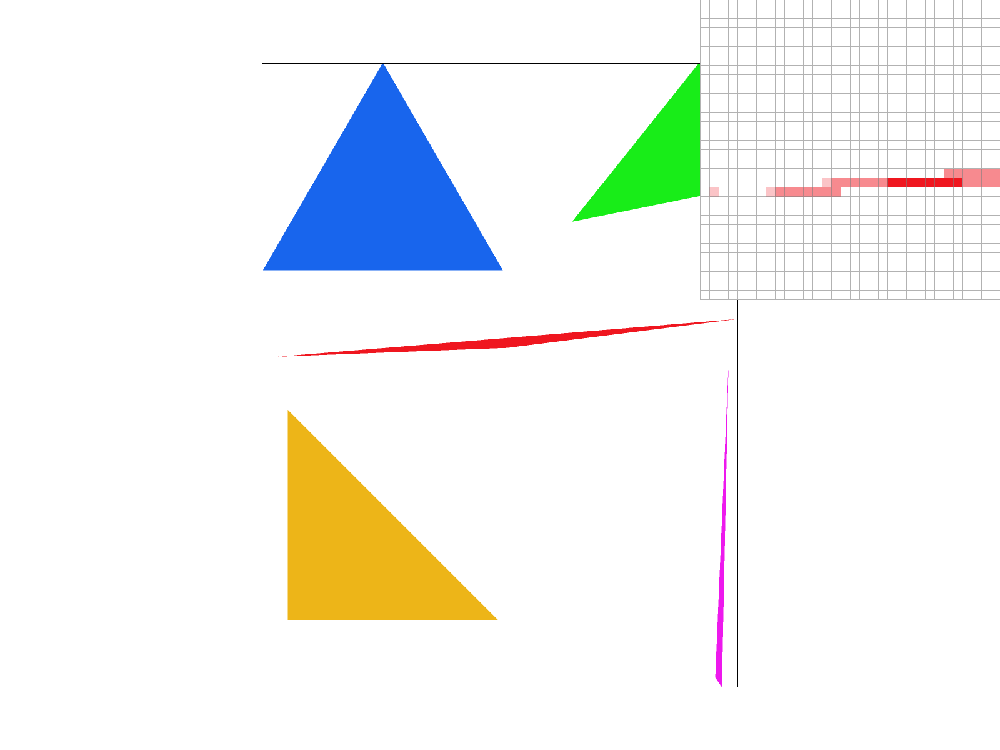
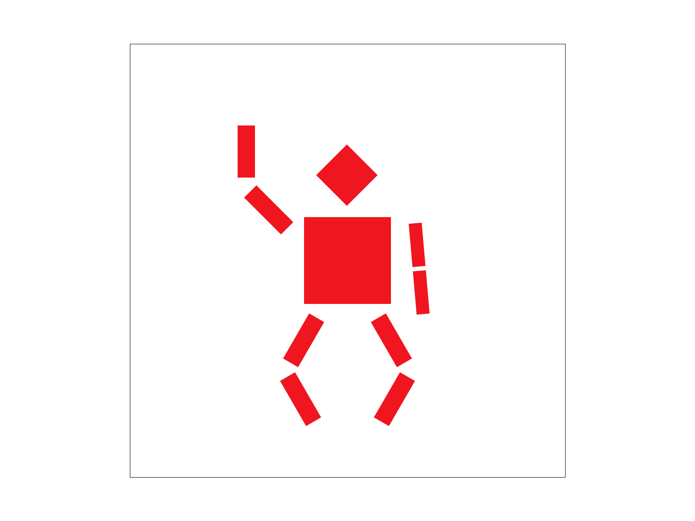
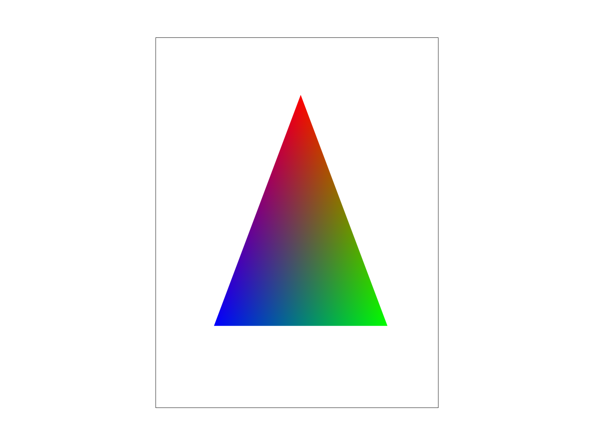
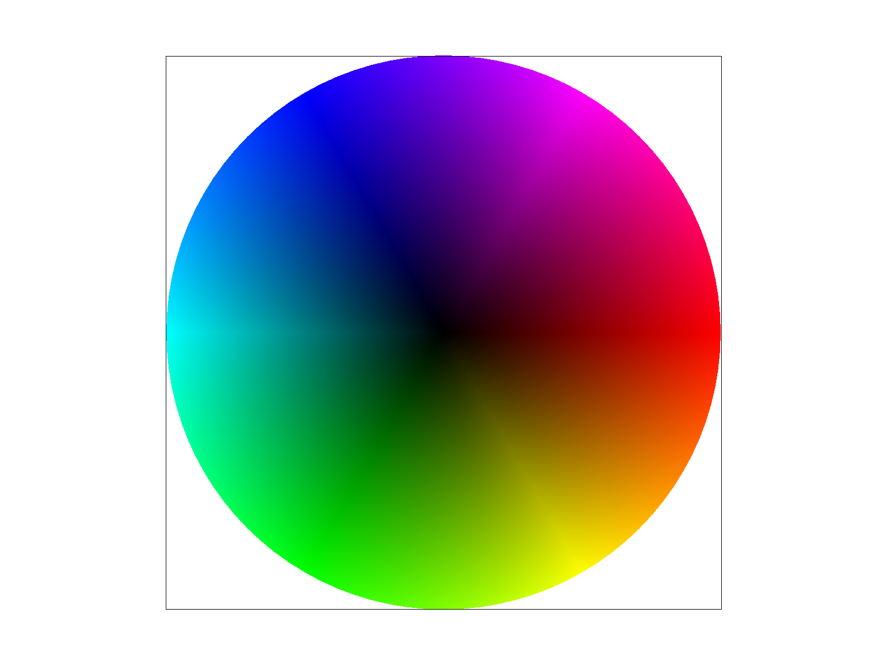
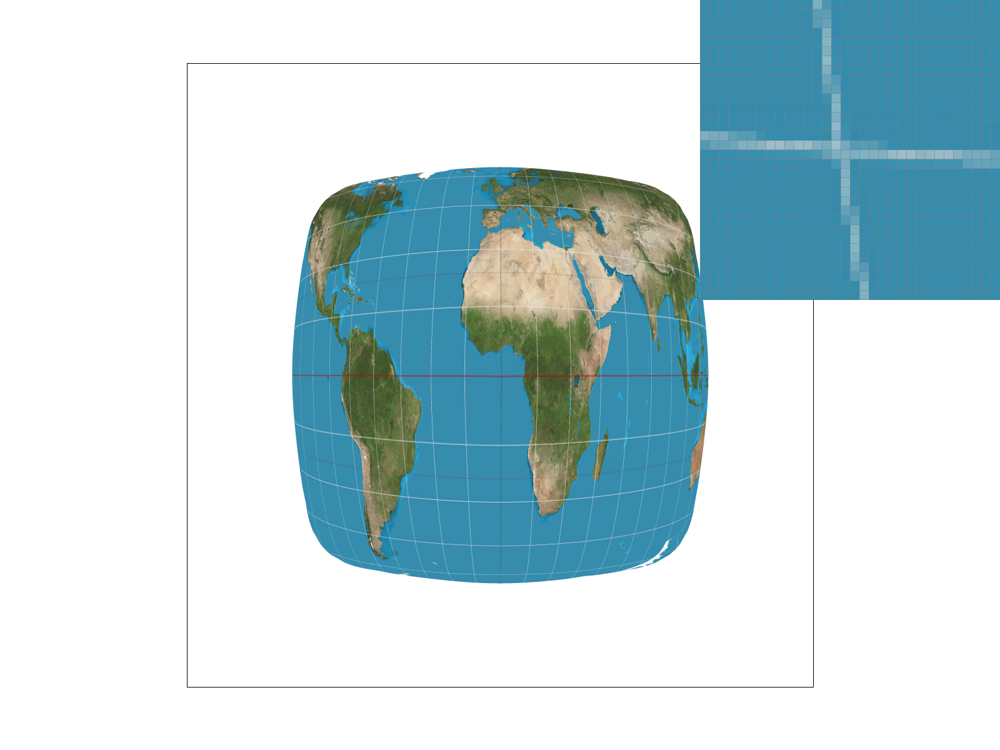
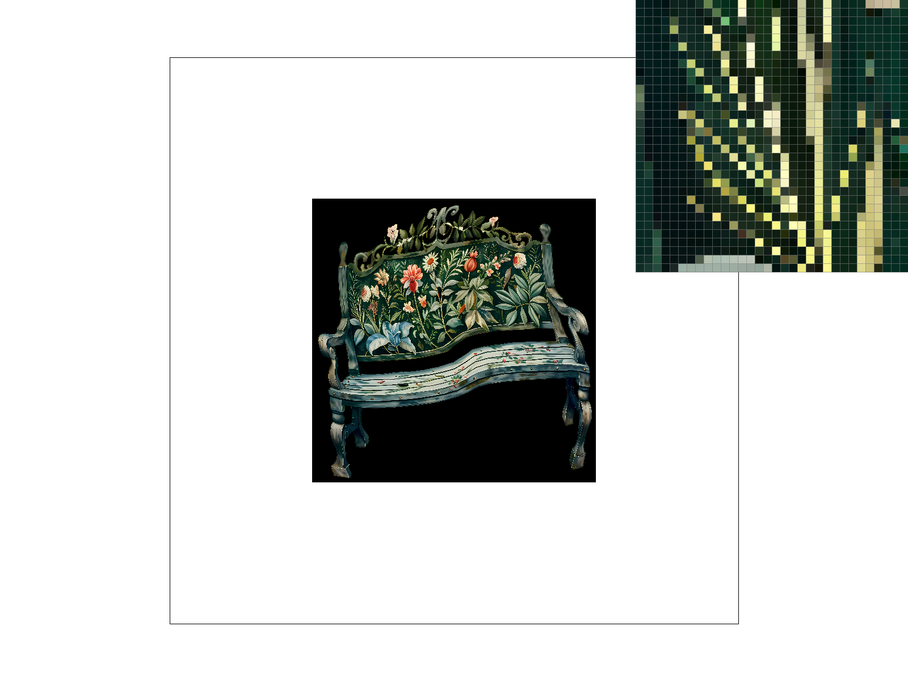
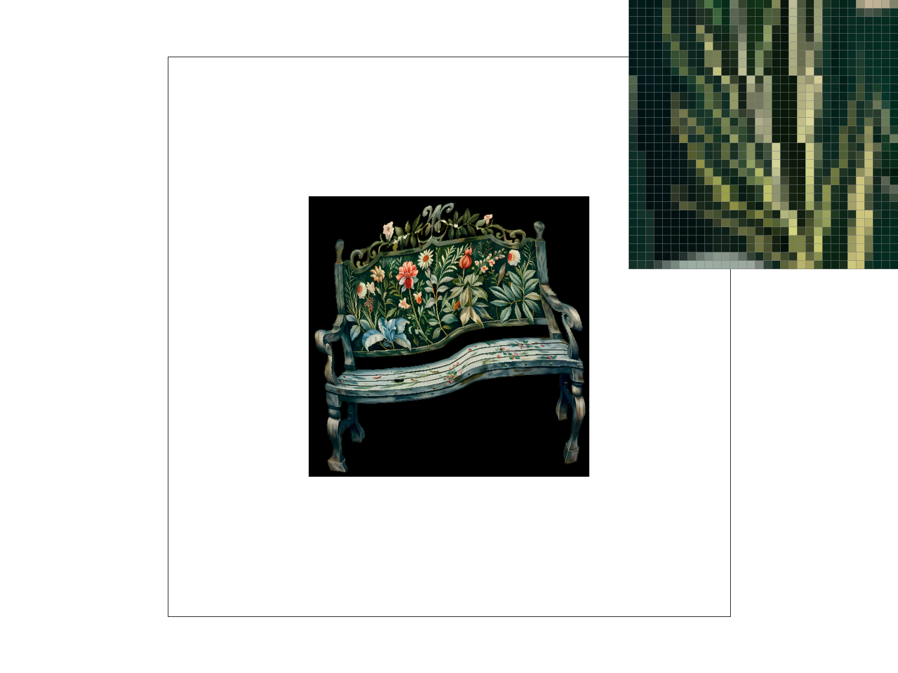

Overview
In this homework, I implemented a razterizer, which draws triangles, supersamples, and maps textures onto the screen. The razterizer is able to take 2D geometries and display them on a screen such that it looks visually appealing by preventing aliasing. On a high level, I learnt different ways of making objects on screens look better by strategically blurring different areas of the screen. I learnt that using the highest resolution image is not always the best choice, due to physical limitations of how small pixels can be, so using a blurrier image might give you a better overall image.
I completed 1 extra credit portion, that is part 1.
Section I: Rasterization
Part 1: Rasterizing single-color triangles
I rasterize a triangle by coloring all the pixels that are bounded within the three edges of the triangle. I first draw a bounding box that encloses the triangle by finding the largest and smallest x and y coordinates among all its vertices. Then I iterate through each pixel in the bounding box and do 3 line tests to see whether the center of the pixel is contained within the triangle. I would color that pixel if it is contained inside the triangle. This method essentially checks each pixel in the bounding box, so it would take time proportional to the size of the bounding box.
Extra Credit: To make the rasterization faster, I first switched from executing 3 line tests per pixel to calculating the barycentric coordinates of that pixel and seeing whether its alpha, beta and gamma values are all positive, indicating that it is contained inside the triangle. I also realized that when calculating the alpha and beta values, the values in the denominator are not dependent on the coordinate of the pixel, so I precomputed this so that it can be applied across all the pixels. I also realized that I did not need to check every pixel in the bounding box of the triangle. For each row, after we have seen at least one pixel inside the triangle, if we encounter another pixel that is outside the triangle, we can safely assume that all the pixels after that (to the right of it) are outside the triangle, and so we can skip them and advance to the next row. It takes significantly faster to rasterize a triangle using the optimized method. While the results vary from triangle to triangle, we see an average of a 1.25x to 2x improvement in performance. The results for one triangle are presented below.

|
| Approach | Time Taken (ms) |
|---|---|
| Unoptimized | 0.258 |
| Optimized | 0.148 |
Part 2: Antialiasing triangles
In order to do supersampling, I needed to create a sample buffer that has its height and width scaled by the sqaure root of the sampling rate. I would then execute a similar rasterizing method as in part 1 with each of these mini pixels. This involves iterating through each mini pixel in the bounding box of the triangle and coloring it if it is contained within the bounds of the triangle. I would then iterate through each pixel in the frame buffer and average the color values of the mini pixels that correspond to that pixel in the sample buffer. Supersampling is useful because it removes jaggies by blurring the edges of shapes so that the transition becomes less drastic.
In the 3 comparisons below, we see that each rendering has a different amount of blurring applied to each corner of the triangle. At 1 sample per pixel, we notice that there is a large space between the tip of the corner and the main body of the triangle. This is an aliasing artifact where some pixel centers are contained inside the triangle while some lie outside it. As we increase the sampling rate, the amount of blurring increases and this is because we are able to sample the triangle more finely thanks to supersampling. This makes the corners look smoother and removes jaggies.
|
|

|
|
Part 3: Transforms
In this rendering, cubeman is hitting the Nae Nae, just like how it was depicted in Silento's 2015 song, Watch Me (Whip/Nae Nae). I did this by performing rotation transforms on his two arms and legs.
|

|
Section II: Sampling
Part 4: Barycentric coordinates
The barycentric coordinate of a point gives a measure of how much each of the vertices of the triangle contribute to that point. The triangle below illustrates this. Each of the vertices in that triangle consists of just one color, red, green or blue. Each point in that triangle consists of a weighted average of the colors of each of those vertices, depending on its barycentric coordinates, or how close it is to each vertex. This is why points along the bottom edge fade from blue to green, and the points at the center are grey (it consists of red, green, and blue, but all with smaller amounts.).
|

|

|
Part 5: "Pixel sampling" for texture mapping
Pixel sampling works by mapping a triangle in texture space onto a triangle in the sample buffer. This can be done by iterating through each pixel contained in the triangle in the sample buffer, and finding its barycentric coordinates in that triangle. We would then assume that the point would have the same barycentric coordinates in the triangle in texture space, and with this we can find its coordinates in texture space. We would then find out what color that point is and apply that color to the point in the sample buffer.
There is a high chance that the point in texture space does not directly land onto the center of a pixel. In that case, we will need to infer what color that point will be depending on the colors of its neighboring points. There are two main methods that achieve this: nearest sampling and bilinear sampling. Nearest sampling finds the nearest pixel to that point and assumes the color of that pixel. Bilinear sampling uses a weighted linear combination of the 4 pixels (1 or 2 for edge cases) closest to that point, taking a higher proportion of their color the closer it is.
Comparing nearest sampling and bilinear sampling at 1 sample per pixel, we see that there is significant less aliasing in the white vertical grid lines using bilinear sampling compared to nearest sampling. This is likely because bilinear sampling slightly blurs the line by averaging the colors across a few pixels, while no blurring occurs for nearest sampling at all. At 16 samples per pixel, we see little difference between the two methods because there is already blurring happening due to supersampling and so we see little aliasing in both methods. Therefore, we can expect to see large differences between the two methods when the sampling rate is small and when we are looking at high frequency details.
|
|
|
|

|
|
Part 6: "Level sampling" with mipmaps for texture mapping
Level sampling works similarly to pixel sampling except that instead of sampling points on the original texture map, we sample points on downsampled versions of the texture map depending on how scaled-down the triangle containing the point is. For example, suppose we map a large triangle on the texture map onto a small triangle in the sample buffer, then the screen would not be able to capture all the details of the texture map, leading to aliasing. In that case, if we had sampled from a blurred version of the texture map, then we would not have aliasing.
In my implementation, in order to measure how scaled-down a triangle is, I took two points adjacent to my original point, one above it and one next to it, and measured how far it is from the original point they are on the texture map. The further those points are, the more scaled-down the triangle is. I would then sample from a more downsampled version of the texture map depending on how scaled-down the triangle is. For even better results, I sampled the colors from two downsampled versions of the texture map and took the weighted average of them.
I will now compare between pixel sampling, level sampling, and supersampling. In terms of speed, level sampling is slower than pixel sampling since it requires more steps, like taking measurements of adjacent points and sampling from downsampled versions of the texture map. Supersampling can be faster or slower than the first two methods depending on how many samples per pixel we use. In terms of memory usage, supersampling likely uses the most space since we need to create a larger sample buffer to store the colors of the sampled points. Level sampling would use slightly more memory usage than pixel sampling since we need to store the downsampled versions of the texture map. We can use Mipmaps which take up no more than four thirds of the original space. The antialiasing power of level sampling is the strongest since it samples from downsampled images and so jaggies will almost never form. Pixel sampling has good antialiasing if we use bilinear sampling, while supersampling has good antiliasing if we have a high sample per pixel number.
|

|
|
|

|
|
Acknowledgements
I used W3Schools and ChatGPT to learn the syntax of C++. I learned important concepts like the inline keyword, different ways of defining functions and how namespaces work. I also used ChatGPT to learn HTML and CSS, where it helped me generate the timing table in part 1.